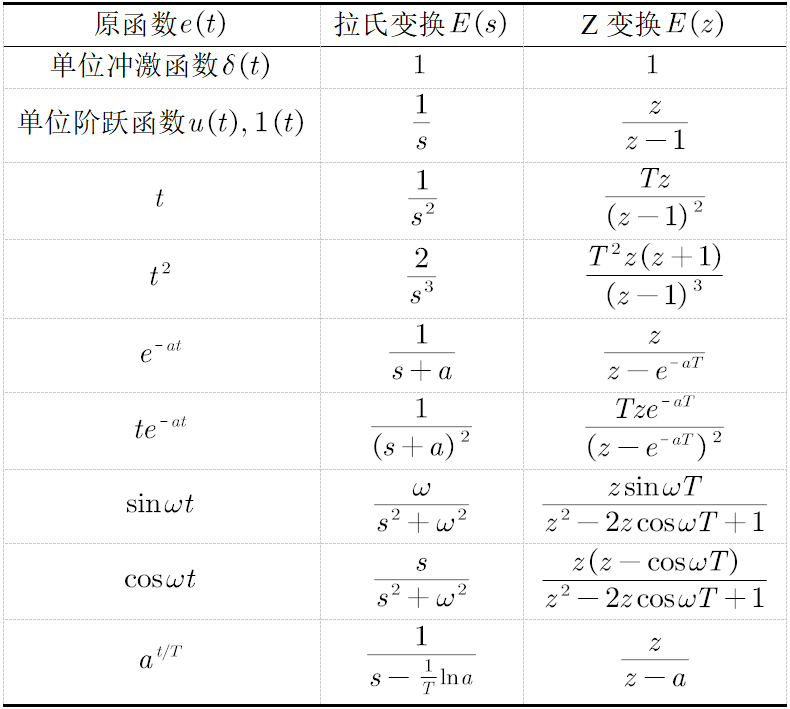

拉氏变换与Z变换的常用性质对比
提示
第一次进入页面时如果（大概率）页面上的Latex公式未正确渲染，刷新一下页面即可。
拉氏变换常用性质
拉普拉斯变换是工程数学和信号处理中的重要工具，其性质揭示了时域与复频域之间的映射关系。以下是拉普拉斯变换的主要性质总结：
1. 线性性质
若 \( \mathcal{L}\{f(t)\} = F(s) \) 和 \( \mathcal{L}\{g(t)\} = G(s) \)，则对于任意常数 \( a, b \)，有：
意义：线性组合的拉氏变换等于各函数变换的线性组合，简化了复杂信号的频域分析。
2. 时移性质
若 \( \mathcal{L}\{f(t)\} = F(s) \)，则时域延迟 \( \tau \) 后的函数满足：
意义：时域中的延迟对应复频域中的指数相位调整。
3. 频移性质（s域平移）
若 \( \mathcal{L}\{f(t)\} = F(s) \)，则乘以指数函数后的变换为：
意义：频域中的平移对应时域中的指数加权。
4. 微分性质
-
一阶导数：
\[ \mathcal{L}\{f'(t)\} = sF(s) - f(0) \] -
n阶导数：
\[ \mathcal{L}\{f^{(n)}(t)\} = s^n F(s) - \sum_{k=0}^{n-1} s^{n-k-1} f^{(k)}(0) \]
意义：将微分运算转化为代数运算，简化微分方程求解。
5. 积分性质
-
单次积分：
\[ \mathcal{L}\left\{\int_0^t f(\tau)d\tau\right\} = \frac{1}{s}F(s) \] -
n次积分：
\[ \mathcal{L}\left\{\underbrace{\int_0^t \cdots \int_0^t}_{n} f(\tau)(d\tau)^n\right\} = \frac{1}{s^n}F(s) \]
意义：积分运算在频域中表现为除以 \( s^n \)。
6. 卷积定理
若 \( \mathcal{L}\{f(t)\} = F(s) \) 和 \( \mathcal{L}\{g(t)\} = G(s) \)，则时域卷积对应频域乘积：
意义：将复杂的时域卷积运算转化为频域乘法，简化系统响应计算。
7. 初值定理与终值定理
-
初值定理：
\[ f(0^+) = \lim_{s \to \infty} sF(s) \] -
终值定理（需极点位于左半平面）：
\[ \lim_{t \to \infty} f(t) = \lim_{s \to 0} sF(s) \]
意义：直接通过复频域求取时域初始值和稳态值。
8. 尺度变换性质
若 \( \mathcal{L}\{f(t)\} = F(s) \)，则时间尺度缩放后的变换为：
意义：时域压缩或扩展对应频域缩放。
9. 周期函数的拉氏变换
若 \( f(t) \) 是周期为 \( T \) 的周期函数，则其拉氏变换为：
意义：简化周期性信号的分析。
10. 收敛域特性
- 因果信号：收敛域为 \( \text{Re}(s) > \sigma_c \)（右半平面）。
- 非因果信号：收敛域为 \( \text{Re}(s) < \sigma_c \)（左半平面）。
- 双边信号：收敛域为带状区域（双侧拉氏变换）。
11. 与傅里叶变换的关系
当 \( s = j\omega \) 时，拉氏变换退化为傅里叶变换：
意义：拉氏变换是傅里叶的推广，适用于更广泛的信号类型。
应用场景
- 微分方程求解：将微分方程转化为代数方程，简化计算。
- 系统稳定性分析：通过极点位置判断系统稳定性。
- 电路分析：RLC电路的频域建模与响应计算。
总结
拉普拉斯变换的性质为信号处理、控制理论和电路分析提供了数学基础，涵盖时频转换、系统响应分析及稳定性判断等场景。实际应用中需结合收敛域、极点分布等特性综合判断。
Z变换常用性质
Z变换是离散信号分析与系统设计的核心工具，其性质揭示了时域与复频域之间的映射关系。以下是Z变换的主要性质及其数学描述和意义：
1. 线性性质
若 \( X_1(z) \) 和 \( X_2(z) \) 分别是序列 \( x_1[n] \) 和 \( x_2[n] \) 的Z变换，则对于任意常数 \( a, b \)，有：
意义：线性组合的Z变换等于各序列Z变换的线性组合，简化了复杂信号的频域分析。
2. 时移性质
若 \( \mathcal{Z}\{x[n]\} = X(z) \)，则时移后的序列满足：
-
右移（延迟）：
\[ \mathcal{Z}\{x[n - k]\} = z^{-k} X(z) \quad (k > 0) \] -
左移（超前）：
\[ \mathcal{Z}\{x[n + k]\} = z^{k} \left( X(z) - \sum_{n=0}^{k-1} x[n] z^{-n} \right) \]
意义：时域移位对应频域的相位调整，是系统时延分析的基础。
3. 频移性质（z域尺度变换）
若 \( \mathcal{Z}\{x[n]\} = X(z) \)，则乘以指数序列后：
意义：通过改变复变量 \( z \) 的尺度，实现频域平移。
4. 卷积定理
若 \( x[n] * h[n] \) 表示时域卷积，则：
意义：将复杂的时域卷积运算转换为频域乘法，简化系统响应计算。
5. 微分性质（z域求导）
若 \( \mathcal{Z}\{x[n]\} = X(z) \)，则：
意义：用于处理序列的加权操作，例如分析斜坡信号或系统的瞬态响应。
6. 初值定理与终值定理
-
初值定理：
\[ x[0] = \lim_{z \to \infty} X(z) \] -
终值定理（要求系统稳定）：
\[ \lim_{n \to \infty} x[n] = \lim_{z \to 1} (z - 1) X(z) \]
意义：直接通过Z变换求取序列的初始值和稳态值，无需逆变换。
7. 共轭对称性与翻转序列
-
共轭对称性：
\[ \mathcal{Z}\{x^*[n]\} = X^*(z^*) \] -
翻转序列：
\[ \mathcal{Z}\{x[-n]\} = X\left( \frac{1}{z} \right) \]
意义：分析实信号对称性及非因果系统的特性。
8. 帕塞瓦尔定理（能量守恒）
意义：时域与频域能量等效，用于信号能量分析。
9. 收敛域特性
- 时域因果性：收敛域为 \( |z| > R \)（\( R \) 为最外侧极点模）。
- 时域非因果性：收敛域为 \( |z| < R \)（\( R \) 为最内侧极点模）。
意义：收敛域决定Z变换的有效性及系统的稳定性。
应用场景示例
- 系统稳定性分析：极点位于单位圆内时系统稳定。
- 滤波器设计：通过零极点分布调整幅频特性。
- 信号压缩与恢复：利用Z变换实现频域压缩。
总结
Z变换的性质为离散信号处理提供了数学基础，涵盖时频转换、系统响应分析及稳定性判断等场景。实际应用中需结合收敛域、极点分布等特性综合判断。
常见函数的拉氏变换与Z变换公式表
